Designing experiences. Building solutions.
Maria
Morales
UX/UI designer with real client work, a shipped product running in production, and growing code skills as I make the jump into tech.
About me
A few things
about me.
I don't have all the answers yet, but I know how to find them.
Attention to detail was the first sign that I was capable of design. Curiosity and ambition were what led me to it, and I've carried the same outlook ever since: I don't always know the answer right away, but I know it's out there and I'll find it.
My mind works like a set of gears: analyzing, poking around, imagining solutions before I ever put them on paper. At 18, someone gave me a Rubik's cube, and that's where I learned that good design isn't finished until every piece is resolved.
I was born in Venezuela and growing up in Argentina taught me adaptability. I learned to translate ideas in my head no matter what language they came from. Growing up between two countries meant I was always translating something, not just language, but tone, expectations, the way people wanted to be talked to. That habit stuck. I still default to explaining things twice, once simply and once in detail, because I never assume the first version landed.
You'll probably find me photographing landscapes, sipping mate (the tea, not a friend) while watching soccer, or organizing absolutely everything I can get my hands on.
My journey
2022
Started freelance design
First clients, first real briefs, apparel, logos, brand identity.
2024–2025
UX/UI Degree
Studied interaction design, user research, and prototyping. Built Luquita, a full product with a business model.
2026
Built & shipped Break Board
Designed, coded, and deployed a real app. HTML, CSS, JS, Firebase. Still running in production.
Now
Breaking into tech
Learning to code independently. Targeting design + code hybrid roles. Open to entry-level tech positions.
∞
Learning
Featured work
Things I've shipped.
My workplace ran on a manual system for logging employee breaks. Sheets got lost or forgotten, and plenty of people just didn't like using them. The complaints came from both sides: employees wanted something easier, with fewer steps, and managers wanted something more accessible, without worrying about lost sheets or scanning them every night.
I designed the UI from scratch, coded it, and deployed it on Firebase. It's actively used by my team every day.
The approach
Every decision was made with both users in mind: accessibility for employees and managers, balance, an adjustable design, and fewer steps at every turn.
The result
Now there's more visibility. Employees spend less time filling things out and have clarity around their breaks. Managers don't have to worry about employees abusing their breaks, and at the end of the night, one button logs everything. No unnecessary steps.
What it does
4 real-time break slots with countdowns, live occupancy counter, Kiosk Mode with PIN lock, manager History view, daily log with CSV export, and break extension requests.
Stack
HTML · CSS · JavaScript · Firebase (Hosting + Realtime Database)
tester01@hotmail.comtester01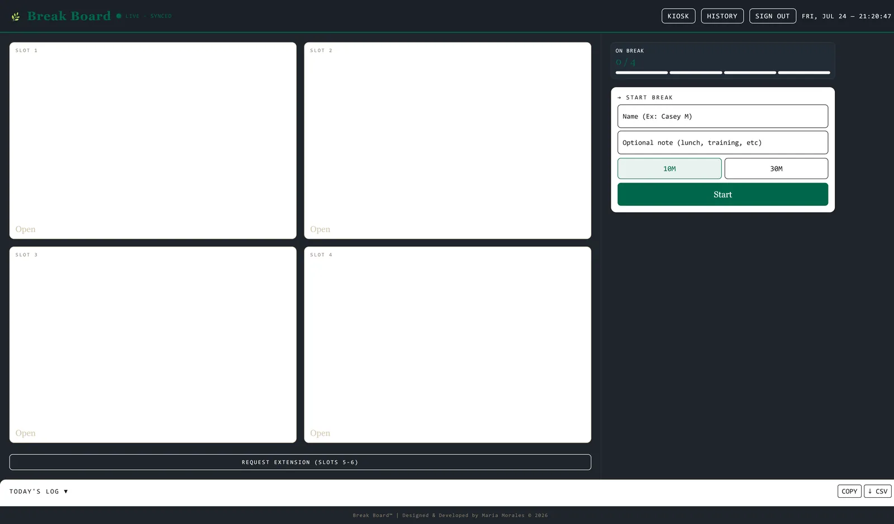
Luquita is a personal finance mobile app designed for young working adults, helping them manage their money, track goals, and build financial confidence.
Built as a school group project for Demo Day, the team designed a full product strategy alongside the UX: freemium model, ad monetization, and affiliate marketing. We weren't just designing screens. We were building a business.
My role
UX/UI design in Figma, UX research, user flows, wireframes, high-fidelity screens, and interactive prototype.
Problem
Luquita came out of just how much young people struggle when it comes to their finances. Our research was about finding what was happening, why it was happening, and what we could actually do about it. We learned that young people didn't have the information or guidance to manage their money. General finance apps gave too little context, which created confusion instead of understanding.
Approach
We designed Luquita around a mindset of educating: helping young people learn to manage their money and build the confidence to actually put it to use.
Validation
In user testing, Luquita came through as accessible, approachable, and confidence-building. Learning about finance through your own finances turned out to be genuinely useful, and the ability to simulate a scenario gave people the confidence to take real financial steps.
View Figma prototypeFreelance design
Real clients, real work.
5 clients across branding, apparel, and event design, each one a real brief and a real relationship, not just a portfolio filler piece.
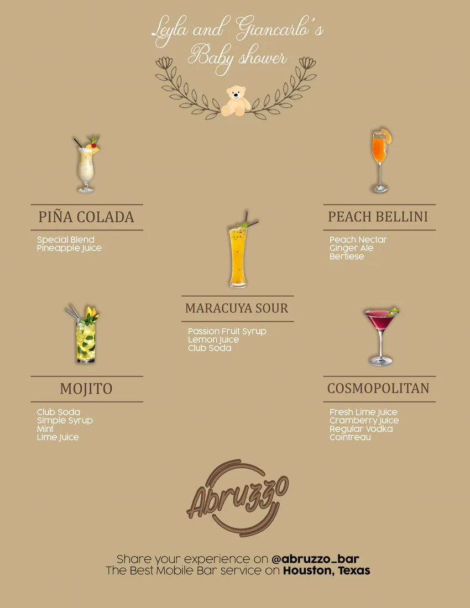
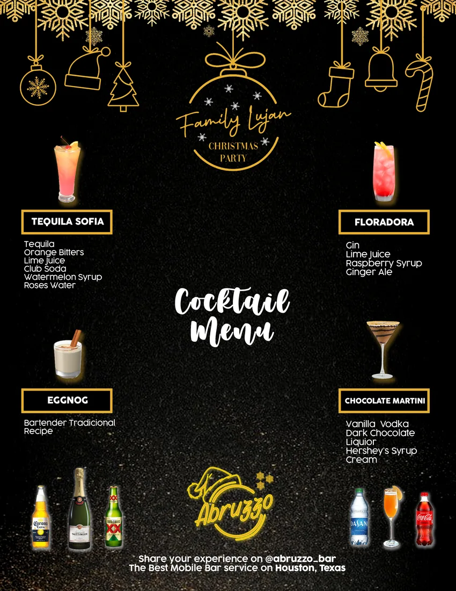
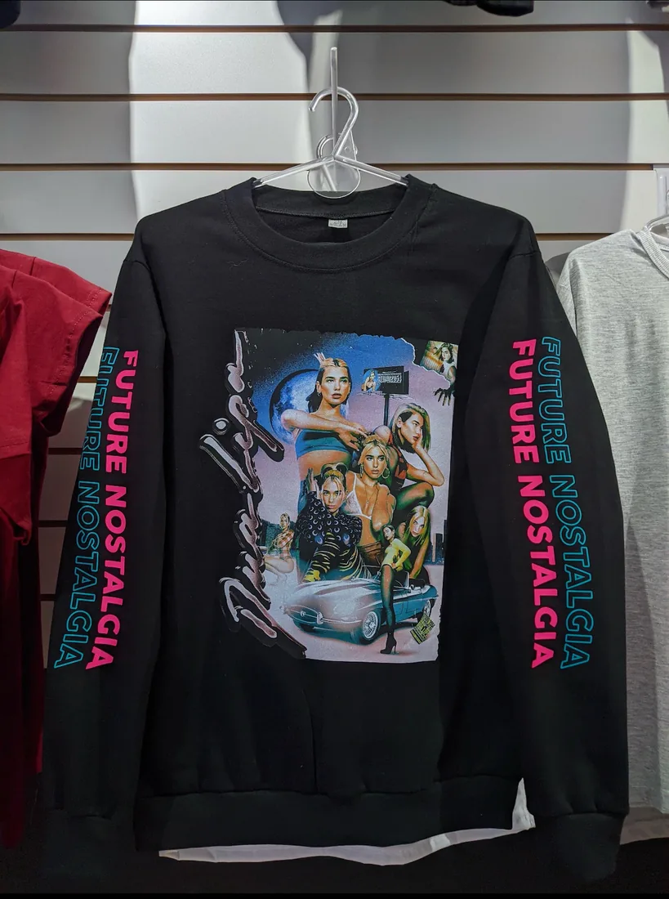
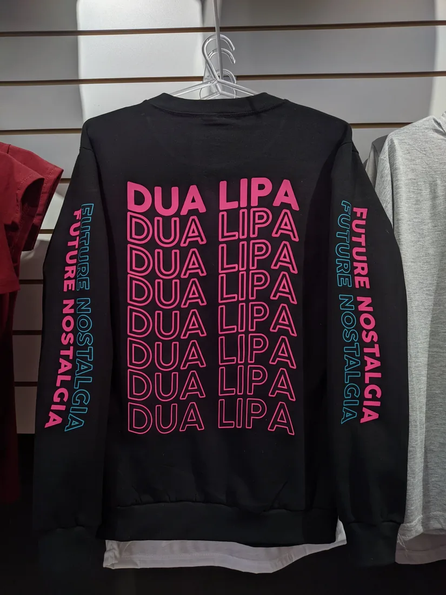
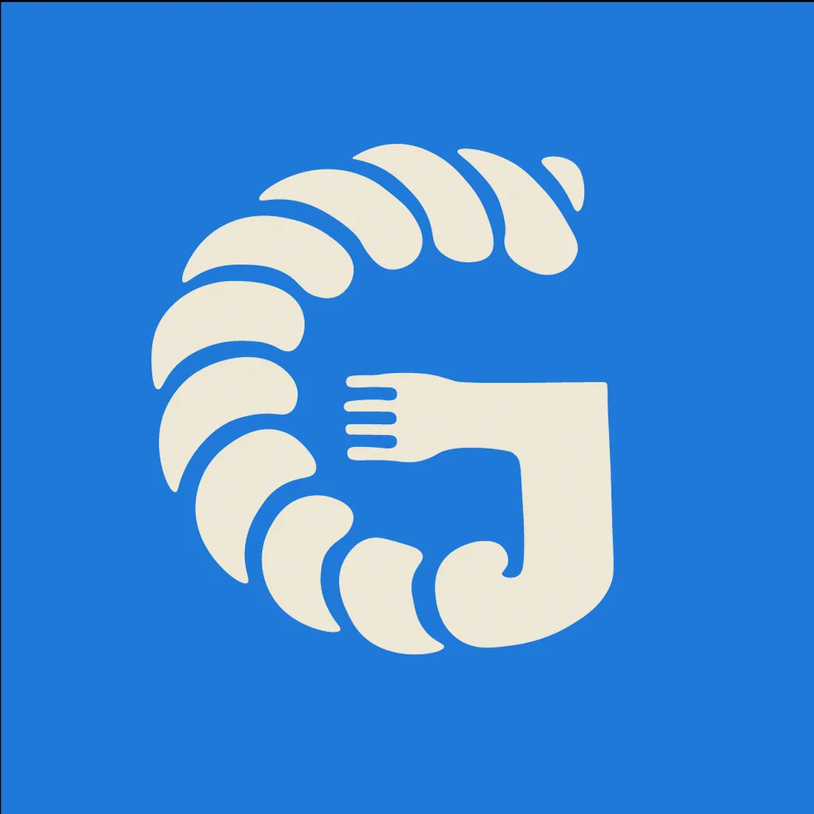
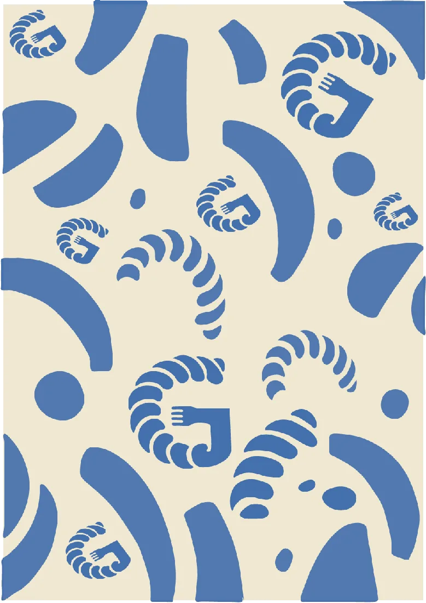
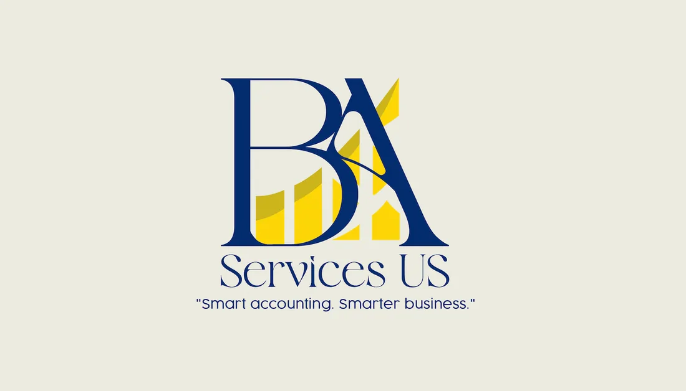
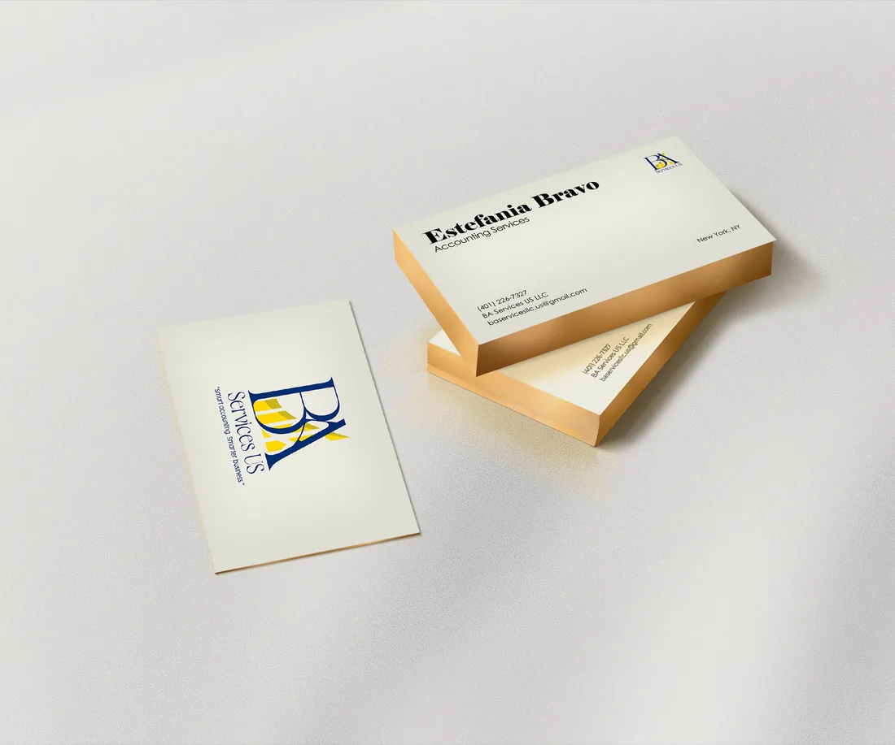
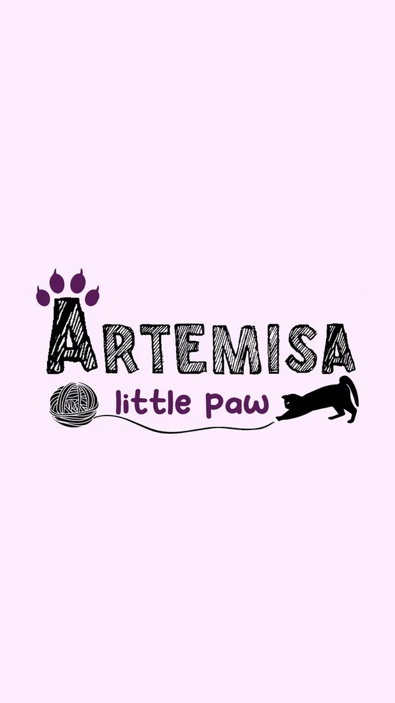
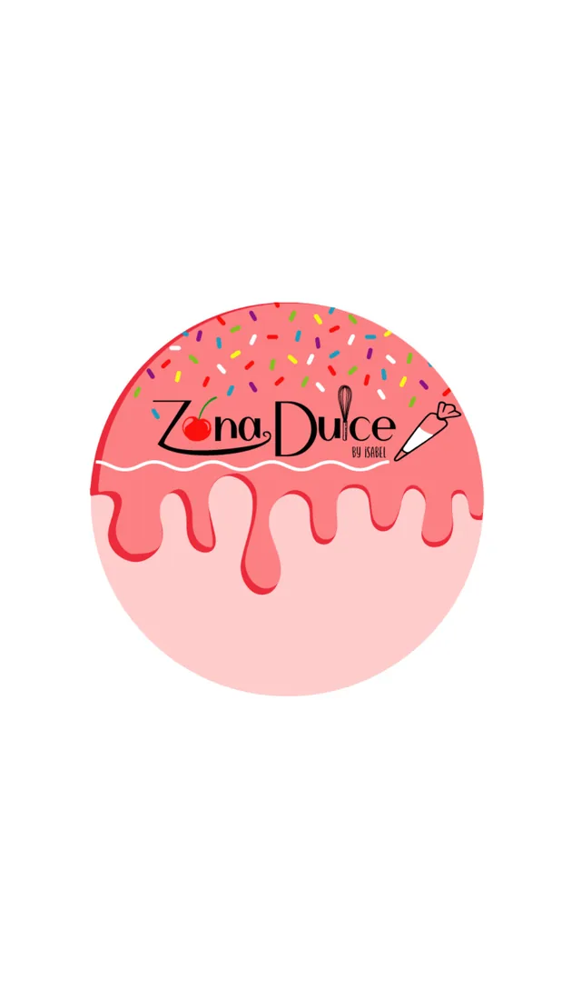
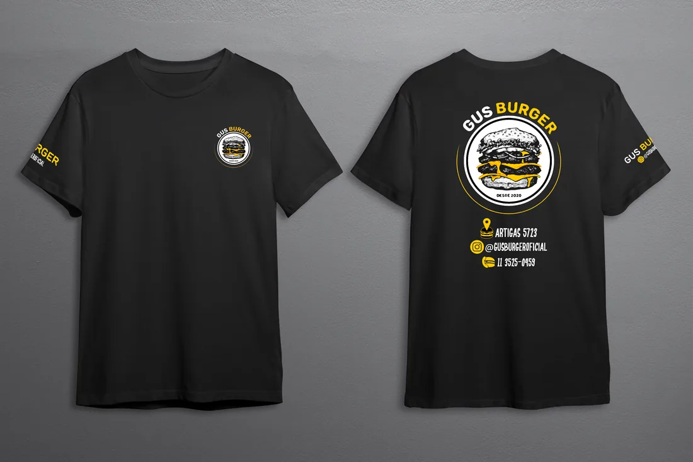
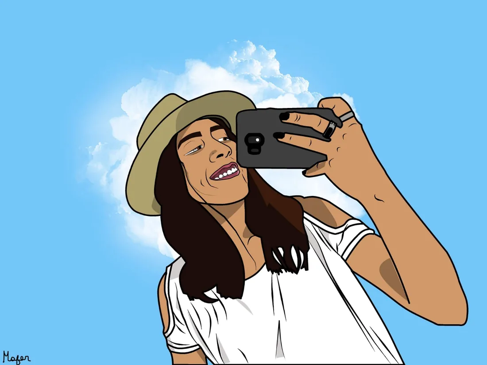
Get in touch
Let's work
together.
Open to UX/UI, design + code hybrid, and IT-adjacent roles. Always happy to talk, whether it's a job, a project, or just a hello.
maria.moralesj13@gmail.com